-
Hampta Pass
2010-09-19. Difficulty: Moderate.My first trek in the Himalayas. Actually the first camping trek for most of us. Not knowing how to pack, we struggled to carry our heavy backpacks and sleeping bags. To top it all, we didnt have enough protection against rain and crossed the pass soaked and freezing. So it was exhausting, but memorable and amazing too, and got us hooked to the Himalayas.
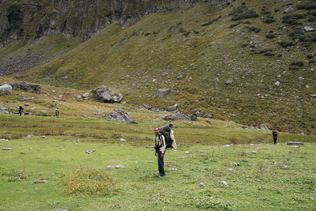 -
Sathyamangalam
2010-11-13. Difficulty: easy.None
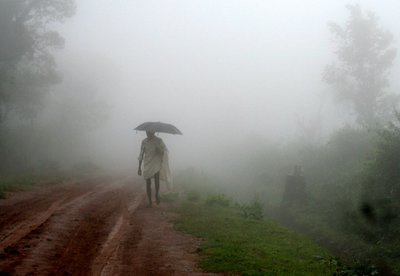 -
Gutherayan
2011-01-29. Difficulty: easy.None
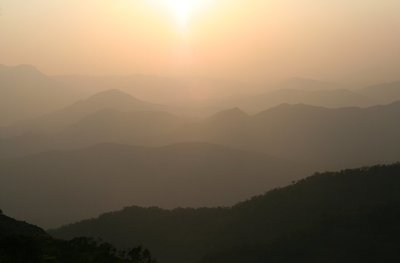 -
Roopkund
2011-06-01. Difficulty: Moderate.A trek to the mysterious skeleton lake partly spoilt by a deceitful guide. But variety of terrain on the way with cedar forests, alpine meadows and snow covered mountains. Also probably the trek with most flora and fauna - mainly rhododendron and birds.
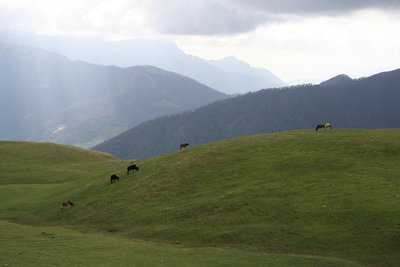 -
Top Slip - Chinnar
2011-10-23. Difficulty: easy.More of a wildlife trip with a group from CTC. Memorable for first close encounter with a wild elephant (a mother with a calf that stomped its foot in rage at our proximity before we backed off) and with the Great Indian Hornbill
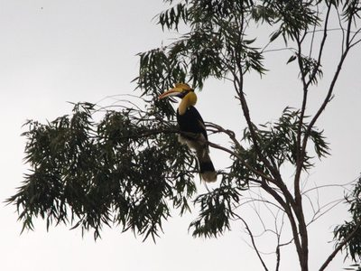 -
Kumbakarai to Kodaikanal
2012-03-19. Difficulty: moderate.Climbing up all the way from Kumbakarai to Kodaikanal in one day in hot conditions made this difficult.
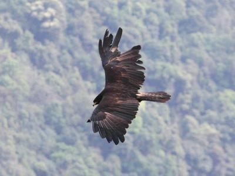 -
Bali Pass
2012-05-16. Difficulty: moderate.May turned out a little early for this. Lot of snow at the pass, a bridge washed away in rains … Finally we had to change plans to reaching the pass instead of crossing it and fell short of this too by a few hundred meters.
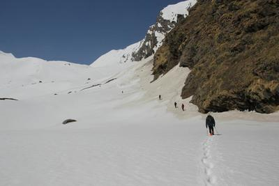 -
Top Station
2012-09-26. Difficulty: moderate.A climb along the route of the old ropeway used to bring tea from top station to the plains. Starting at Kurangani, we sweated our way up to top station in the heat. Nice campsite at the top and a hairy climb down.
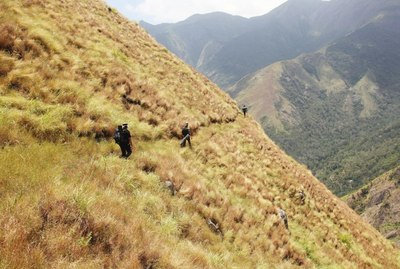 -
Rajmachi
2012-10-28. Difficulty: moderate.Visit to Srivardan and Manoranjan forts, starting from Mumbai and ending in Lonavala. A long walk for one day
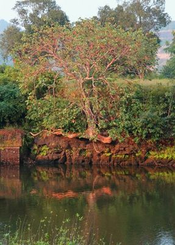 -
Pulicat lake
2013-02-02. Difficulty: easy.An unforgettable weekend. Over two days and a night we managed to do a lot of bird watching, mostly huge flocks of flamingos, paddle around in the water for hours with a lifejacket on, practise riding a catamaran and getting our car stuck in the mud and finally having it pulled out by a tractor!
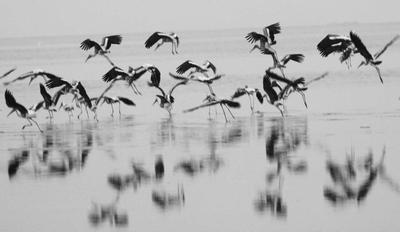 -
Stok Kangri
2013-07-14. Difficulty: difficult.Started with a memorable road trip on NH1 from Shimla to Leh. Experienced worst high altitude sickness on way to base camp. On summit day we managed to get stuck without a guide. Still managed to reach about about a 100 m below the summit at 6000 m.
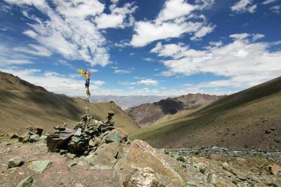 -
Kudremukh
2013-12-24. Difficulty: easy.Easy to moderate one day climb to the top of Kudremukh. Interesting ruins along the way and surprised by hail at the top
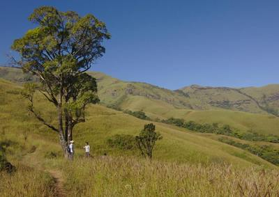 -
Sakleshpur
2014-01-02. Difficulty: easy.Three day walk on railway tracks in pristine western ghats forests. Innumerable tunnels added to the thrill.
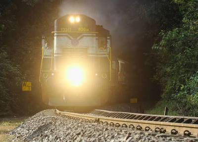 -
Chadar
2014-01-17. Difficulty: Moderate.Six day trek over a frozen river. Amazing landscapes, but some of the coldest days and nights we have experienced.
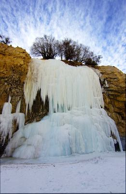 -
Meesapulimala
2014-04-23. Difficulty: easy.A days climb to meesapulimala near Munnar.
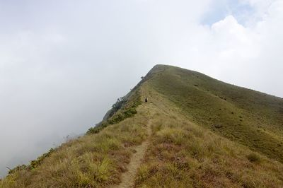 -
Kumbakarai to Kodaikanal II
2014-07-26. Difficulty: Easy.Second time on this trail. A delayed start this time meant we did it over two days, staying for the night at Vellagavi village.
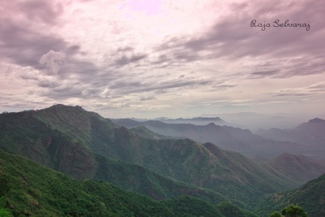 -
Hampta Pass II
2014-10-17. Difficulty: None.Four years after our first trek across this pass, we were back with no support other than 2 guides. Was fun, but exhausting carrying all our stuff, cooking and putting up tents ourselves. Best thing was the solitude with no other groups around us.
-
Gandikota
2015-01-06. Difficulty: easy.A road trip across Andhra Pradesh covering some caves and forts. Highlight was Gandikota, called the grand canyon of India with some spectacular views and the stay in a tent under a huge windmill.
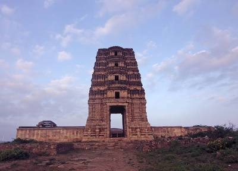
Total -